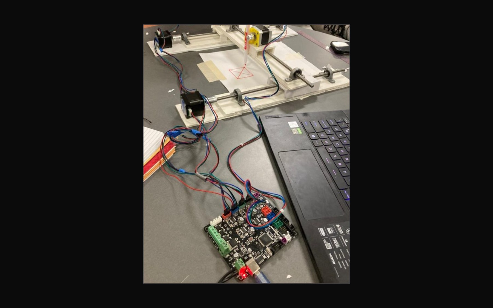

Index
Work
Every project, with the build, the numbers and what did not work. Filter by discipline.

Theioma
A self-hosted command centre where one person directs teams of coding agents, from a written brief to a build manual.

Tez
Typed decisions with calibrated confidence from one forward pass of a local model.

Local-first work hub
Projects, meetings and one-to-ones in one desktop app that never leaves the machine.

GoPro gimbal
A three-axis stabiliser with closed-loop control, built to smooth footage from snowboarding and skating.

Rucksack CNC mill
A small Cartesian milling machine with a 2.5-inch working cube, light enough to carry.

Two-axis pen plotter
Stepper-driven X and Y axes, and a pen that lifts, drawing from G-code.

Milled gasket
Measure an aluminium block, model a seal that fits it, and mill it from solid.

Water lily raker
A handheld tool for clearing an invasive water lily, redesigned when the real constraints arrived.

Debris removal by nodal precession
Multi-target active debris removal that lets orbital physics do the plane changes.

PERCI: a penetrator for Umbriel
A smallsat penetrator that rides on NASA's Uranus Orbiter and Probe and hits a moon.

A CubeSat that can stop its own spin
A one-axis attitude determination and control system in a CubeSat-style bus, tested on a spinning testbed the class built.

What nuclear power does for electric propulsion
An audit and rebuild of a course paper on nuclear electric propulsion: what a fission reactor really enables, mission by mission and decade by decade.

Sampling volcanic ash from the air
An aviation system to sample the atmosphere around eruptions and improve ash-cloud forecasts.